The tools
The tool rail on the left, in the order you usually build a map. Pick a tool below to see its panel and what it does. Click any picture to see it full size.
Select
Click, move, scale and turn anything on the map. This is where you end up after placing something, and Esc always brings you back here.
- Drag a corner to scale, just outside a corner to turn. Arrow keys nudge (Shift moves further).
- Drag on empty map to box-select. Ctrl+drag drags out a copy.
- Right-click for the object menu: tint, flip, turn 90 degrees, front or back, move to layer, link (Ctrl+G), make a prefab, distort, hide (H), lock (Ctrl+L).
- Properties (right) shows the settings of what you picked: size, height in feet, opacity, blend, lit by the sun, casts shadows.
- Pick two or more things (or two or more points of a line while editing it) and the bar over the map shows Align in a row, Align in a column, Space evenly across and Space evenly down (spacing needs three or more; the end ones stay put).
- Distort (right-click > Distort...): drag the corners, edges or grid lines to bend the picture (Shift keeps a move straight). To cut your own lines, turn on Slice (S) and click or drag along an edge or line where you want the cut: a new line runs across the picture there, with points you can drag. Shift snaps the cut to eighths, Alt+click removes a line. + Column / + Row split the widest part in half. Enter or Esc when done.
Paint
Paints ground textures, water, roofs and the void (the darkness around a cave) onto the current layer. Pick a ground, water or void layer in Layers first; the panel changes with the layer kind.
- Brush size, strength, softness and a rough edge that follows the texture (stones and tufts show first).
- Ctrl+drag on the map changes the brush size and softness.
- Hold Shift while painting for a straight line: it runs along whichever way the stroke first moves. Let go of Shift to paint freely again.
- Shape modes paint rectangles or click-the-corners shapes, handy for water and roofs.
- Each ground layer has its own look: turn, scale, tint, brightness, contrast.
- The row of buttons at the top of the panel adds a new paint layer at any time: ground, water, void, mist, roof or rain. The kind you are painting now is lit up.
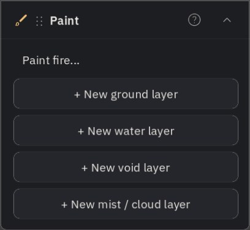
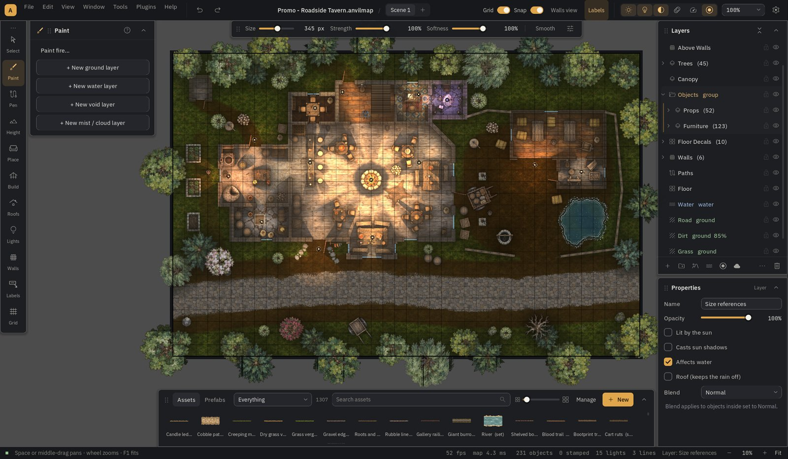
Pen
Draw any line, then decide what it is: a path, bridge, wall, cliff, waterfall, fire, a line of assets, a floor or stairs.
- Click to add points. Double-click, Enter or right-click finishes; click the first point to close the shape. Hold Shift as you finish to draw another.
- Change what a line is (path, wall, cliff...) any time in Properties.
- Each point has its own width. Right-click a point or segment to split, delete, straighten, bend or close the shape.
- Paths take textured style sets with end caps and corners. A bridge has its own deck height and casts a shadow into the drop.
- Pen > Stairs drags out freestanding stairs anywhere. Pick a look in Properties: Hewn block, Worn temple, Ruined, Rough cave, Dark wood or Weathered planks each mix their own step pieces and colour, so two flights on one map need not look the same.
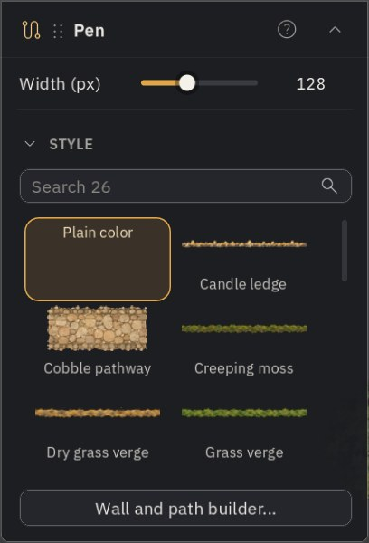
Curves and handles
- Click and drag while drawing to pull a point out into a curve. The yellow handle shows the curve's direction.
- Drag the square at the end of a yellow handle to turn the curve. The other side turns with it, so the line stays smooth. Hold Alt to break the point and move one side on its own, for a sharp twist.
- Handles snap back to a standard length (about a third of the way to the next point) when you let go. Hold Shift as you let go to keep the length you dragged.
- On a finished line, double-click it to edit, then click a point in Move points or Curve mode to see its handles. A sharp point shows faded handles: drag one to make it a smooth curve point.
- This works for every Pen line: paths, walls, cliffs, waterfalls and fire.
Ropes, beams and garlands
- A line that lies on something (a rope along a dock, a beam across a gap) gets Lift (ft) and Thickness (ft) in Properties > Sun, in steps down to 0.05 ft.
- Set Lift to the height of what it lies on, so it takes the light up there instead of that thing's shadow. A Thickness above 0 makes it cast its own thin shadow (about 0.2 for a rope). Both work with 3D lighting.
Cliffs, dunes and banks
- Make a line a cliff in Properties. Close the shape for a plateau (or a pit with Inside is: Low ground). The line is the top edge; Face depth is how far the side reaches down.
- Look sets a whole style in one go: painted rock, grey slabs, sandstone, earth bank, mountain blocks, snowy rock, Sand dune and Earth slope.
- Sides: pick a rock face texture, or the Texture style for sand, earth or turf sides with no rock. Runs down the slope lays the texture along the drop; Slope shade darkens it toward the foot.
- Top: a fill texture for the high ground, and a second texture in patches over it.
- Fade top and Fade foot blend the side into the top and into the ground. With Shadow at 0 this makes a soft dune or bank instead of a hard edge.
- Keep the top's soft edge smaller than the face depth, or the top texture spreads onto the ground below.
- Foot line: in line edit, drag the orange foot points to set where the face meets the ground: a gentle slope, a bulging face, a foot tucked under the top. Foot points have curve handles (Alt breaks the pair). Properties > Cliff > Reset foot puts it back.
- Soft slopes for hills: Style > Soft slope (or the Grassy hill look) draws no rock face. The ground shows through and the shape only raises it, so the sun and lamps shade the slope and it casts real shadows. The width is how long the slope is; with Low ground it makes a hollow. A soft slope has no sides of its own, so it takes no side texture: the slope shows your ground layers. Fade top and Fade foot fade the top texture out over its edge.
- Dunes and banks with sand or soil all the way down: Style > Texture (or the Sand dune look), a sand texture in Sides with Texture colours on, Shadow at 0, and Fade top and Fade foot to blend the side into the top and the ground. The top texture runs on under the whole top fade.
- Overlapping cliff shapes meet as solids. New cliffs start with a top fill of the ground they were drawn on.
- Objects on a clifftop edge stand by the 60% rule: mostly over the top, they stand on it; mostly over the drop, they stand below. In Properties an object on a slope can Stand, Hug the slope or be Set into the face.
- Bridge lines and bridge pieces (planks, logs, beams) rest on the ground under each end and run straight between them. Select a point on a bridge line to give it its own height.
- Tall props near a clifftop edge cast their sun shadow across the top. If a dark patch comes and goes as you move the edge, it is a prop's shadow: move the prop or lower its height.
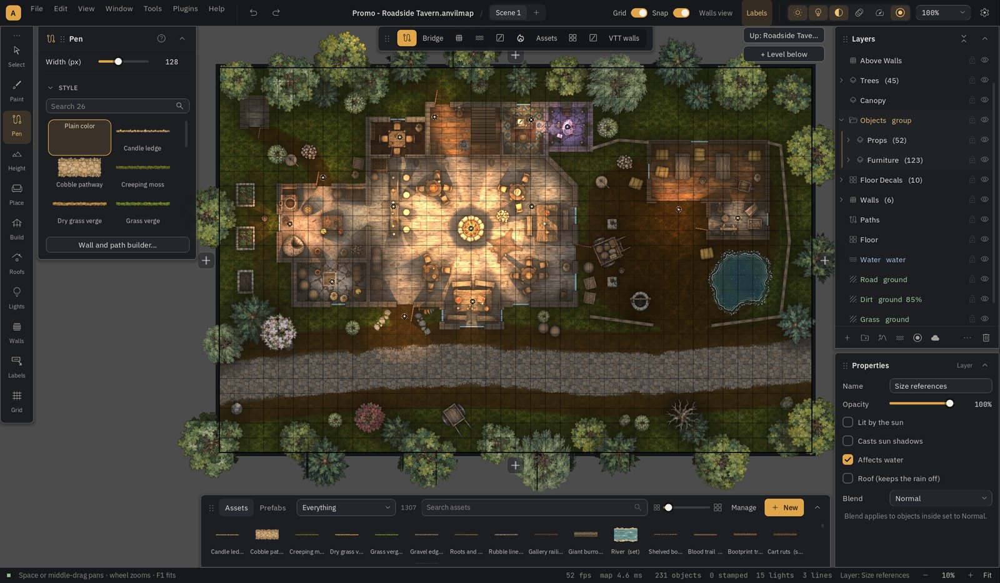
Height
Raise and lower the ground. Hills shade themselves, cliff tops get an ink line, and low ground is hazier, like a hand-drawn map.
- Modes: Raise, Lower, Flatten, Smooth, Cliff (terraces) and Level (an exact height).
- Steep ground can show a cliff texture or a cliff set laid along every drop.
- Show heights draws the height map over the map; the status bar shows the height under the cursor.
- For sharp drawn cliffs, use Pen and make the line a cliff.
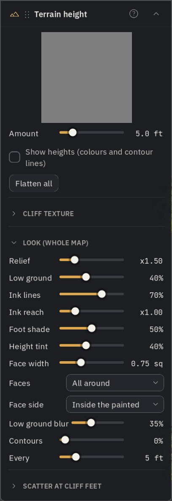
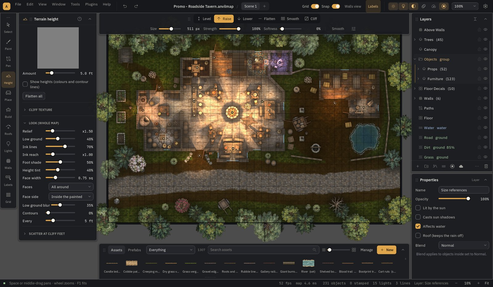
Place
Places the art you picked in the Assets panel at the bottom of the window.
- Choose a folder or type in Search assets (names and tags both work).
- Click a picture, then click the map. You go back to Select with the object ready to move.
- Hold Shift while clicking the map to place several in a row.
The Prefabs tab places ready-made groups the same way. Each asset knows its size in squares and its height in feet, so it lands at the right scale and casts the right shadow.

Build
Draw rooms; the walls, floors, ink lines and doors are made for you. Thick walls go outside, thin ones between rooms.
- Draw a rectangle or click the corners of any shape. Draw inside a room to split it, beside it to add on.
- Round room: drag a box for a circle or oval with smooth curved walls (a tower, a well house, a hut). Right-click a room in the Build tool > Make round turns a room drawn as many short sides into a clean circle or oval. Doors and windows stay where they were.
- The tool bar over the map has the modes: rooms, wall lines, doors and windows, stairs, cut away, merge rooms (M).
- Doors have a hinge side, swing and open angle; windows have glass; archways leave a gap.
- Move, turn, flip or scale a whole building and the walls keep their thickness. Turning or sizing it turns and sizes the floor picture with it (a flip leaves the floor picture as it was).
- Right-click a wall > Delete this wall segment (corner to corner) opens that wall. It stays open when you drag the other walls or corners, and light and shadow pass through the whole gap. To put it back, click the gap and press Delete.
- Add a roof covers the building with a roof you can then shape in the Roofs tool.
- Curve mode makes Bezier walls, like the Pen: drag a wall to bow it, drag out of a corner to pull smooth handles, drag a handle to shape the curve (Alt moves just that side). Double-click a corner to make it sharp again, a wall to straighten it. Adding a corner on a curved wall splits the curve and keeps its shape. Doors and windows on a curved wall bend with it.
- Shift+click corners to pick several: drag one to move them all, arrows nudge, Delete removes them, and the align bar over the map lines them up or spaces them.
- Pick a room for Raised floor (a quarterdeck, a stage, a dais) and Wall height (a ship's rail at 3 ft, a cabin at 8 ft). Props, lamps and stairs on a raised floor stand that high and its edge casts a shadow. Delete the wall between a raised room and the one below for an open step. For a ship, untick Roofed so the deck gets the sun.
- Floors and walls without walls: set Walls > Height to 0 (or press Floor only (no walls)) for a dock, a deck or a stage: just the floor with an ink edge, no wall art, no wall shadows. A single room can do the same with its own Wall height at 0; a wall it shares with a walled room keeps that room's height. Roofed is a toggle: under Walls for the whole building, and on each selected room. Untick it for a deck or a courtyard so the sun reaches the floor.
- Lift (Properties > Floor, or Floor in the Build tool): raise the whole building, its 1 ft thick floor and its walls, this many ft over the highest ground under its corners, like a prop's Lift. The ground, water or chasm under it stays, so a lifted dock across a river or a chasm is a bridge with its shadow below, and props on it stand on it.
- Pictures for the floor, the wall fill and the wall art are buttons: click one to open the picker, with a search box and Textures or Everything (any picture in your library, such as grass as a floor). The panel is split into Building, Floor and Walls.
- Colours: right-click a building > Tint colours its floors and walls; Floor > Colour colours the floor only, for the whole building or one room (select it).
- Merge joins the picked rooms into one room with one outline, so no line or stray corners stay where they met. Rooms merged in older builds: press Tidy > Clean up. Clean up also drops deleted-wall marks that no longer sit on any wall.
- Floor hole: an opening in a room's floor (a hatch, a stairwell, a gap in a deck). Pick Rectangle, Round or Shape (click the corners) and draw it inside a room. The walls stay and the hole gets an ink edge; on a level above, the level below shows through it. Click a hole in Select / move to drag it, drag its corners to reshape it, nudge it with the arrow keys, or set its Width, Depth and Edge (ink line, raised lip, none) in the panel. Right-click its edge to add a corner, a corner to remove it.
- Stairs: Fade to runs the steps toward a colour along the flight, going up or down. Lower its alpha (transparency) and the steps fade out toward the far end; steps faded nearly out cast no shadow.
- Distort a flight (right-click > Distort...) to bend it: the steps, the well and their shadows follow the new shape.
- Edit > Copy settings on stairs copies their look (art, colour, fade) onto every flight you paste it on.
- A ship at sea: pick the building and tick Under way under Sailing in Properties (shown when the map has water). The water draws a bow wave, a foam line along the hull, a V of waves behind it and churned water astern. Drag the blue arrow to turn the heading; V lines sets how far the two white lines of the V run back from the bow. Speed 0 leaves it at anchor with just the foam line.
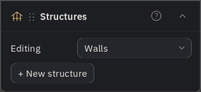
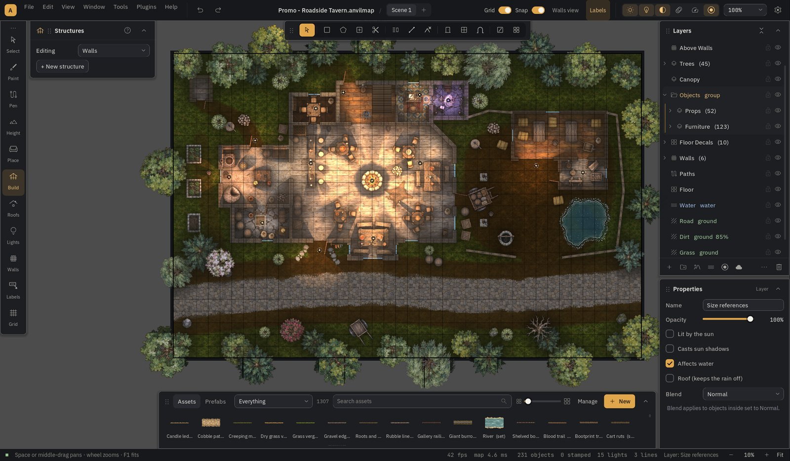
Roofs
Draw roofs and shape them: hip, gable, shed, flat, cone, dome and barrel.
- Shapes: drag out a rectangle, round, octagon, L, T, U or cross. Hold Shift to add to a roof, Alt to cut from it.
- Edit lines: drag the ridge, hips and corners; double-click a line to add a point and bend it; drag two points together to join them. Right-click an end to make it a gable or a hip.
- Draw line: draw a line across a roof to split a slope.
- Faces: give any slope its own texture, size and turn. Double-click a slope in Edit lines for quick turns.
- Ridge and hip caps, a gutter along the eave, and a faint shadow under both.
- Eave height is how high the bottom edge sits above the ground. It sets shadow length.
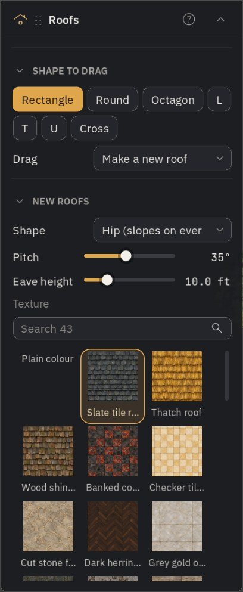

Lights
Set the daylight and the sun, and place lamps.
- Scene darkness: Day, Dusk, Night, Cave. Daylight is how bright the shadows are.
- Master light: the sun or moon, where it comes from, how high, how strong, and whether it casts shadows.
- New light: torch, candle, campfire, brazier, magic, spotlight, floodlight, window, fireplace, moonlight. Click a preset, then click the map.
- Drag a lamp's handles to change its reach, falloff, aim and width.
More in Light and shadow.


Walls
Draw single walls (outside the Build tool), and add doors, windows and openings to any wall.
- A wall can be 0 ft tall (Properties > Height): a textured line on the map. It casts no shadow, lets light through and is left out of VTT walls.
- Walls edit like Pen lines: points, widths, curves.
- Doors and windows snap to a wall, cut their own opening and slide along it. Open, close, flip, lock or make them one-way.
- Wall kinds: normal, invisible (for the virtual tabletop only) and terrain (blocks sight, not movement).
- Walls view (top bar) shows what a virtual tabletop will get.
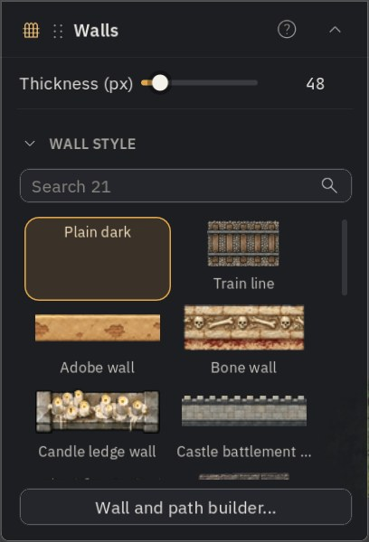
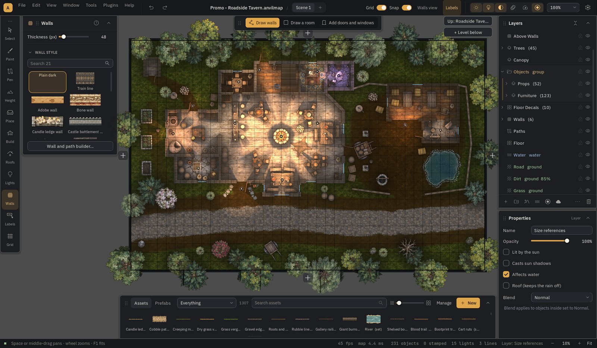
Labels
Notes for the game master (a trap, a monster, stairs down) that sit over everything and are never lit.
- Click to add a label, double-click to type in it. Ctrl+B, I and U for bold, italic and underline.
- Pull arrows out of the box edge and aim them. Drop a tip back on the box to remove it.
- Show in exports decides whether a label goes into exported pictures. Export can also write a DM copy and a clean player copy.
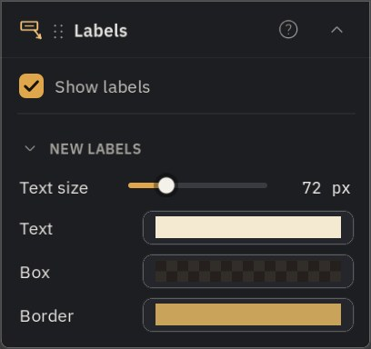
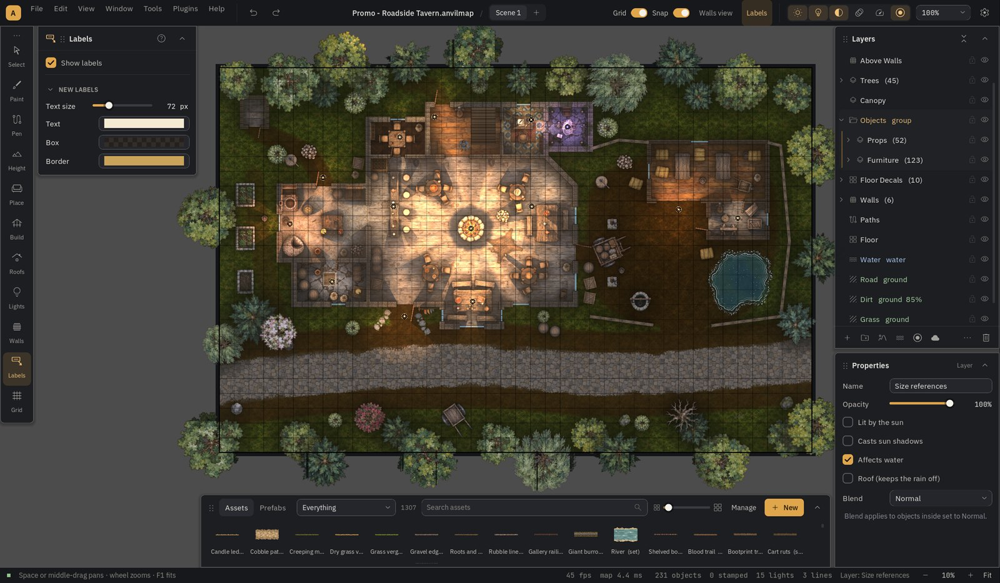
Grid
Turns and resizes the snap guide, so you can line things up with a building drawn at an angle. The map's own grid never moves, so exports and virtual tabletops stay aligned.
- Square, pointy hex and flat hex grids. Snap to corners, centres or edge middles.
- Hold Alt while placing to ignore the snap.
- Grid line colour and strength are in File > Settings.
Specialized tools
Less common tools live in Tools > Specialized so they do not crowd the rail:
- Waterfall: a fall between two water levels with a plunge pool, spray and mist. Click the lip where the water tips over, then where it lands (more clicks bend it); double-click, Enter or right-click finishes, Esc drops the line, Backspace takes back a point. Foam, speed, spray and mist are set per waterfall in Properties.
Waterfalls made from water over a cliff are curves: a start, middle and end point along the edge with curve handles, and an orange bottom curve you drag to where the water lands (older ones: Properties > Make it a curve). Taller drops crash harder. A rock or other object placed in a fall sits in the water: it slides over its lower part and foams round its dry top; Out of the water in its Properties sets how much stays dry. - Fire and Fire builder: paint where it burns, from embers to an inferno or a burnt-out ruin, with smoke, sparks and flickering light. Drag where it burns; each stroke is one fire. [ and ] change the width; pick the look for new fires in Tool options. The Paint tool has a Paint fire... shortcut to it. For a fire along a line, draw the line with the Pen and pick Fire.
- Rain: falling rain, wet ground and puddles. The window shows each preset as a picture; set heaviness, puddles, wind, gusts and lightning, choose the whole map or only where you paint it, and which scenes it rains in. With rain on the map already it changes that layer, or adds another (a storm in one scene only). Lightning flashes in the editor only; exports stay still. Everything else is in Properties.
- Scatter brush: paint props from a brush, a set of assets with size, turn and mirror ranges, spacing, a gap between items and clumping. Drag to paint (one stroke is one undo step); Shift+drag removes the brush's props under the circle. Select some props on the map and click New from selection for a brush of your own; + Asset adds the asset picked in the strip. Brushes are kept for every map. Built in: Rubble, Grass tufts, Reeds (bank), Lily pads, Leaves. Claude can also fill an area with a brush or dress the edge of a pond, road or cave rim.
- Fog: fog, smoke, magic mist and poison gas. Drop emitters like lights (reach and falloff), roll it in from a map edge, raise it off water, seep it from cave walls or paint where it starts. It flows with the wind, wraps round buildings and standing stones, pools in hollows and spills out of open doors. Select the Fog group to change its flow, heaviness, look and blend.
- Tree Composer: make your own trees, bushes, stumps and fallen logs. Pick a shape and leaves, move the sliders, set a glow if you like, and Save: the tree goes into My Trees and shows up in the asset strip, with its own 3D shape for shadows.
- Ocean & coast: a sea, its beach and its seabed along one side of the map in one go, with waves that catch the sun.
- Rocks & outcrops: outcrops, pits, ridges and boulder fields made as ordinary cliff shapes you can edit afterwards.
- Wall and path builder: make your own wall and path styles from pieces.
- Generate VTT walls from void: walls for a cave drawn with a void layer.
- Waterfall, Fire, Rain, Fog, Scatter brush, Tree Composer, Ocean & coast, Rocks & outcrops and Generate VTT walls are built-in plugins, updated on their own. File > Modules turns them off and on at any time, no restart needed. Off only hides the tool: your maps still show their waterfalls, fires and rain.